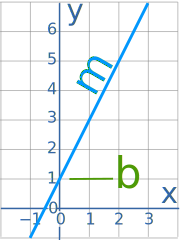
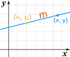

General Form of Equation of a Line
The "General Form" of the equation of a straight line is:
Ax + By + C = 0
A or B can be zero, but not both at the same time.
The General Form is not always the most useful form, and you may prefer to use:
The Slope-Intercept Form of the equation of a straight line: y = mx + b |
 |
or |
|
The Point-Slope Form of the equation of a straight line: y − y1 = m(x − x1) |
 |
Example: Convert 4x − 2y − 5 = 0 to Slope-Intercept Form
We are heading for:
y = mx + b
Start with:4x − 2y − 5 = 0
Move all except y to the right:−2y = −4x + 5
Divide all by (−2):y = 2x − 5/2
And we are done! (Note: m = 2 and b = −5/2)
Why Use It?
It has the advantage of working well with vertical lines, which the Slope-Intercept Form and Point-Slope Form do not.